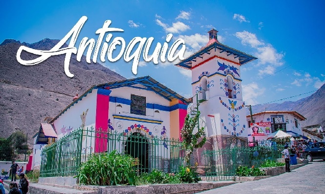
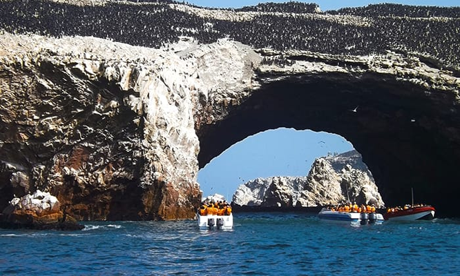

Antioquía
🌈Antioquía es un pueblito mágico que está en la provincia de Huarochirí, en el departamento de Lima. Está a
unas dos horas y media de la capital, y es conocido por ser uno de los pueblos más coloridos del Perú.
🏡Todas sus casitas están pintadas con diseños de flores, animales y figuras alegres, gracias a un
proyecto llamado “Colores para Antioquía”, que transformó el lugar en una verdadera obra de arte al aire
libre.
🌄 Antioquía está rodeado de montañas, aire puro y naturaleza, lo que lo hace perfecto para
desconectarse, tomar fotos increíbles 📸 y disfrutar de su tranquilidad.
🍇 Es un pueblo agrícola, famoso por su membrillo, del que hacen deliciosos dulces y licores.
👣 Si te gusta explorar, puedes visitar lugares cercanos como Cochahuayco, Sisicaya y Espiritu Pampa, o
hacer
caminatas por sus cerros llenos de historia y vistas espectaculares.
¿Que llevar?
- 👕 Ropa ligera para el día ☀️
- 🕶️ Lentes y 👒 gorro
- 👟 Zapatillas cómodas
- 🦟 Repelente y 🧴 bloqueador solar
- 🧥 Chompa para la mañana 🌤️
Paracas
Paracas🌊, es un destino costero impresionante en la región de Ica, Perú. Sus paisajes combinan desierto
y mar, ofreciendo vistas únicas y mucha biodiversidad marina.
🛶 Uno de sus mayores atractivos son las Islas Ballestas, conocidas como las “Galápagos del Perú”, hogar
de leones marinos, pingüinos de Humboldt y aves marinas.
🏖️ Sus playas de arena dorada y aguas tranquilas son perfectas para relajarse, disfrutar del sol y tomar
fotos increíbles 📸.
🍇 La región es famosa por su producción de uvas y pisco, la bebida emblemática del país.
🚴♂️ Para los aventureros, hay tours en buggy por el desierto, sandboard y caminatas por las dunas
cercanas.
¿Que llevar?
- 👕 Ropa ligera para el día ☀️
- 🕶️ Lentes y 👒 gorro
- 🩴 Sandalias o zapatillas cómodas
- 🦟 Repelente y 🧴 bloqueador solar
- 🧥 Abrigo ligero para la brisa marina 🌬️
Chancay
Chancay es un pintoresco distrito costero ubicado en la provincia de Huaral, en la región Lima, Perú.
Conocido por su historia, playas tranquilas y atractivos culturales, es un destino ideal para un paseo de un
día o un fin de semana.
🏰Uno de sus principales atractivos es el Castillo de Chancay, un imponente edificio de estilo
neocolonial que mezcla arquitectura europea y detalles coloniales, rodeado de jardines y patios que invitan a
recorrerlo y tomar fotografías 📸.
🌿Chancay cuenta con áreas verdes, miradores y paseos peatonales que permiten disfrutar del aire libre y
del paisaje costero.
🐟 La gastronomía local es otro punto fuerte: puedes probar pescados y mariscos frescos en los
restaurantes frente al mar, así como dulces típicos de la zona.
👣 Para quienes disfrutan de la cultura y la historia, hay museos y sitios arqueológicos cercanos que
muestran la riqueza histórica del distrito.
¿Que llevar?
- 👕 Ropa ligera y cómoda
- 🕶️ Lentes y gorro 👒
- 📸 Cámara o celular para fotos
- 🩴 Calzado cómodo
- 🧴 Bloqueador solar y agua 💧